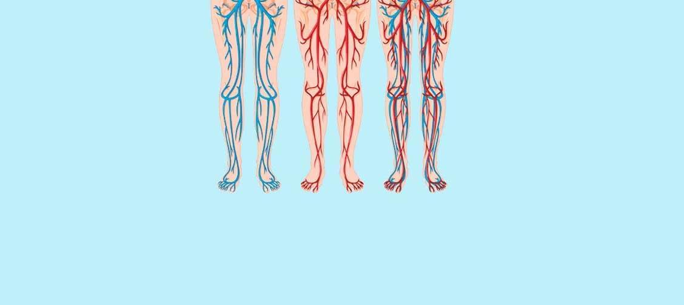

Articole • Fundația de aur • Discuții
Edem, dureri musculare și crampe: 3 indicații sigure ale venelor înfundate. Cum poți să le tratezi singur acasă?
Cine este cel mai rău dușman al colesterolului și
cheagurilor și cel mai bun prieten al venelor?
Picioarele dvs. se umflă seara? Sunt tălpile și picioarele
umflate, aveți pete pe glezne? Acestea pot fi semne ale edemului în vene, ceea ce
înseamnă că în pereții venelor se acumulează lichid. Deoarece edemul afectează negativ
circulația sângelui, aceasta provoacă dureri musculare și crampe.
Toată lumea știe că ictusurile și atacurile de cord sunt
rezultatul venelor înfundate de colesterol. Boli cardiovasculare. Cu toate acestea,
puțini oameni sunt conștienți că acesta este doar vârful aisbergului. „Venele înfundate”
sunt motivul pentru nouă din 10 boli cronice care sunt considerate incurabile.
Dureri de cap, oscilații ale tensiunii arteriale. Articulațiile
vă dor, nu vă mai puteți suporta greutatea, abia vă puteți întoarce sau îndoi gâtul.
Seara, vi se umflă picioarele și dimineața fața. Aveți tinitus în urechi. Mâinile și
degetele devin amorțite. Picioarele dvs. sunt întotdeauna reci. Ați început să aveți
tulburări vizuale. Memoria dvs. se înrăutățește. Nu puteți găsi energie pentru a face
nimic. Mulți oameni definesc acest lucru ca îmbătrânire, dar acest lucru nu este
adevărat.
- De ce venele sunt responsabile de 90% din sănătatea dvs.?
- Ce altceva poate fi găsit în pereții venelor, în afară de colesterol?
- 4 semne evidente și 7 ascunse ale venelor nesănătoase
- Cum vă puteți curăța în siguranță venele acasă?
Am primit răspunsurile la aceste întrebări de la șeful Departamentului de
Chirurgie Vasculară Al universității de Medicină și Farmacie din București,
neurochirurg, profesor doctor Codrin Mureșanu.
Dr. Mureșanu a efectuat până în prezent mai mult de 100 de mii de
operații pe creier deschis. Cel mai tânăr pacient al său a fost un copil de 2 ani.
Dr. Mureșanu are talentul de a explica cele mai complicate proceduri cu un
limbaj simplu, pe care oricine îl poate înțelege. Are 47 de cărți și ghiduri de sănătate
pe care le-a scris pentru Oamenii care nu au studiat medicina. El crede că venele sunt
responsabile pentru 90% din sănătatea noastră și că sănătatea noastră generală depinde
de cât de curate sunt acestea.
De ce venele reprezintă 90% din sănătatea noastră?
Stimate doctor Mureșanu, ați afirmat de multe ori ca venele din corpul nostru sunt responsabile pentru 90% din sănătatea noastră. Puteți explica motivul pentru această afirmație?
Care este cel mai mare organ din corpul uman? Puțini oameni știu răspunsul
la acest lucru. Chiar și persoanele care au studiat medicina răspund uneori în mod fals
spunând creierul sau ficatul. Unii mai înțelepți pot spune că este pielea. De fapt, cel
mai mare organ din corpul uman este sistemul vascular.
Putem merge în
jurul lumii de 2,5 ori.
Sistemul vascular al unei singure persoane ar fi
suficient pentru asta.
Încercați să vă imaginați. Dacă luăm toate venele din corpul uman și le adăugăm împreună, obținem o lungime de 100 de mii de kilometri.
Pentru a spune mai simplu, lungimea ecuatorului este de 40 de mii de
kilometri. O frânghie întreagă care constă din venele unui om poate călători în
jurul lumii de două ori.
Ce părere aveți despre această cifră?
Venele nu sunt doar canale prin care curge sângele. Sunt un organ unic și
complicat. Orice tulburare determină organismul să facă o boală.
Venele înfundate ale picioarelor: varice, picioare umflate,
senzație de greutate, picioare înghețate sau, dimpotrivă, senzație de arsură a tălpilor.
Fisuri ale pielii. Tulburări de circulație a sângelui: protecția împotriva bacteriilor
scade, apare boala fungică. Unghiile devin mai groase și forma lor se modifică.
Când se înfundă venele care alimentează ficatul: steatoza hepatică.
Când mâncați alimente uleioase, acesta lasă un gust amar în gură.
Când venele din articulații își pierd puterea și se înfundă:
țesutul cartilajului se usucă. Articulațiile încep să doară, se dezvoltă osteochondroza
și hernia.
Venele intestinale își pierd elasticitatea: se dezvoltă noduli
hemoroidali.
Venele ochilor: scade vederea. Se dezvoltă cataracta. Mulți oameni
cred că roșeața ochilor se datorează oboselii ochilor, dar sunt de fapt mici sângerări
ale capilarelor ochilor.
Tulburare de circulație sangvină în creier: vertij, tinitus,
regresie de memorie. V-ați dus vreodată la bucătărie și ați uitat de ce v-ați dus acolo?
Sau nu ați fost capabil să vă amintiți vreun cuvânt? Toate acestea sunt semne că starea
venelor din creier se înrăutățește.
De asemenea, trebuie să adăugăm hipertensiunea arterială pe această listă. Hipertensiunea arterială este mama ictusului și sora atacului de cord.
Venele sunt sursa noastră de energie, prin ele trece forța vieții. Dacă o
joncțiune importantă este înfundată, viața se oprește.
Vene înfundate: toate organele mor de foame
Excesul de greutate afectează venele direct. Organele noastre mor
de foame din cauza colesterolului care înfundă venele. Deoarece elementele nutritive nu
ajung la destinație. Creierul trimite mesajul: „trebuie să mănânc”. Persoana mănâncă. Cu
toate acestea, organele nu pot fi hrănite suficient, deoarece venele sunt înfundate.
Creierul trimite un alt mesaj să mănânce din nou și acest ciclu vicios continuă.
Nevoia de a mânca dulciuri și produse de patiserie apare din aceasta.
Corpul dvs. are nevoie de calorii.
Când colegii mei spun pacienților săi „sunteți un pacient cu hipertensiune
arterială din cauza excesului de greutate”, pacienții confundă relația cauză-efect.
Hipertensiunea arterială nu se dezvoltă ca urmare a excesului de greutate, ci invers.
Ei spun că „sănătatea este pe primul loc” pentru un motiv bun, dar trebuie să adăugăm acest lucru: „Nu putem fi sănătoși dacă nu ne păstrăm venele curate”.
De aceea spun același lucru: dacă vrei să trăiești o viață normală, trebuie
să-ți menții venele sănătoase. Lumenul curat al venelor vă protejează împotriva
a 90% dintre boli, dintre care unele sunt „incurabile”.
Pe lângă colesterol, ce altceva înfundă venele?
Știm cu toții cât de periculos este colesterolul. Acesta înfundă venele, îngustează lumenul și astfel împiedică fluxul sanguin. Dar colesterolul nu este singurul lucru care provoacă aceasta.
6,1 kg
este greutatea
totală a grăsimilor stocate în venele unei persoane când aceasta împlinește 50 de ani.
Este corect. Plăcile de colesterol sau „plăcile aterosclerotice” sunt
65-70% din cauza tulburărilor vasculare.
Fiecare persoană depozitează până la 5 kilograme de strat de colesterol
în corpul său atunci când ajunge la 50. Colesterolul depozitat îngustează lumenul
vascular (spațiul gol din interiorul venelor prin care curge sângele) de 4-5 ori.
Încercați să vă imaginați. Dacă spunem că lățimea vasului unui om este de aproximativ aceeași dimensiune ca un deget, în interiorul unei vene care este înfundată de 5 kilograme de colesterol, lățimea spațiului gol prin care poate curge sângele este în jurul a 4 chibrituri.
Aceste plăci nu pot prezenta un risc vital, dar reduc calitatea vieții,
măresc tensiunea arterială, apar dureri de cap, dureri de spate și amorțeală. Trombii
care se acumulează în interiorul venelor sunt mult mai periculoși.
Trombii care se acumulează în interiorul venelor sunt mult mai ușori, au
„numai” de la 800 de grame la 1 kg. Dar datorită structurii lor instabile sunt
foarte periculoși. Un tromb (cheagul care înfundă vena) se poate rupe de peretele venei
de care este lipit și începe să caute o victimă în orice moment.
Bucăți mari de trombi ar putea înfunda vena victimelor lor complet. Într-un
astfel de caz, țesutul nu poate obține suficient sânge.
Ictusul ischemic este înfundarea venei cerebrale. Atacul de cord este
înfundarea venei inimii. Ischemia la ficat, insuficiența pulmonară și insuficiența
renală se dezvoltă din această cauză. Hemoroizii sunt ischemia apărută la ieșirea din
rect. Înfundarea capilarelor de pe picioare ar putea duce la necroză (gangrenă).
Suplimentele alimentare și reziduurile chimice ale medicamentelor determină
acumularea de săruri de calciu în vene. O persoană depozitează 300-400 de grame pe
tot parcursul vieții de 50 de ani. Sărurile de calciu se acumulează cel mai
mult pe creier.
Datorită structurii lor cristaline, acestea sunt periculoase. Acestea
îngustează venele și dacă venele se spasmează din cauza stresului, mișcărilor fizice sau
schimbării aerului, marginile ascuțite ale cristalelor pot sparge vena. Spargerea venei
cerebrale este cunoscută sub numele de accident vascular cerebral hemoragic.
4 semne evidente și 7 ascunse ale venelor nesănătoase
Care sunt simptomele care ne arată că venele noastre sunt înfundate?
Dacă aveți peste 45 de ani și nu ați folosit niciun nutraceutic pentru a vă
curăța venele, pot spune că aveți o problemă.
45
Vârsta de 45 de ani
este o piatră de hotar pentru curățarea venelor.
Înfundarea venelor cu colesterol și mase trombotice este un rezultat
natural al îmbătrânirii. Alimentele de astăzi, medicamentele, fumatul, consumul de
alcool sporesc acest proces și cantitatea de blocare de 5-8 ori. Aceasta este realitatea
lumii de azi și nu poate fi negată.
Principalul simptom că venele sunt poluate
Dacă sunteți diagnosticat cu hipertensiune arterială, puteți să nu mai
citiți acest articol, deoarece înseamnă că aveți regele bolilor vasculare.
Suferiți de oscilații ale tensiunii arteriale? Tensiunea arterială este
permanent ridicată și luați în mod regulat medicamente? Dacă răspunsul dvs. la aceste
întrebări este da, înseamnă că aveți 30% spațiu liber rămas în vene pentru ca sângele să
circule. Restul venelor sunt umplute cu plăci de colesterol, cheaguri de sânge și săruri
de calciu.
Deci, chiar și cea mai mică cantitate de stres, o schimbare a condițiilor
sau un uragan magnetic vă va afecta imediat sănătatea. În acest caz, tensiunea arterială
va crește, tâmplele încep să pulseze și vor apărea dureri articulare.
4 boli cauzate de venele înfundate
- 1. Hipertensiune arterială (hipertensiune arterială) Trebuie să reduceți tensiunea arterială inconsistentă sau ridicată prin administrarea de pastile. Ar trebui să fiți precaut referitor la principalele simptome. Ați fost diagnosticat cu hipertensiune arterială? Atunci este timpul să vă curățați venele.
- 2. Varice Acestea sunt venele urâte și umflate pe picioare. Varicele provoacă greutate, durere și edem. Colesterolul și reziduurile de trombi înfundă supapele venei. Între timp, apar „steluțele” varicoase și iau o structură „asemănătoare pânzei de păianjen”. Acesta este modul în care se dezvoltă varicele.
- 3. Hemoroizi Înfundarea venelor din rect determină apariția nodulilor hemoroidali. Reziduurile provenite din venele purtătoare de sânge măresc fisurile din anus.
- 4. Osteocondroză (Calcifiere) Se dezvoltă în cartilaje datorită circulației insuficiente a sângelui. Cartilajele devin rigide și nu pot funcționa. Acestea nu pot găsi cale pentru a se vindeca. Se usucă, deoarece nu se reînnoiesc. Își pierd funcția de hidratare. Sărurile încep să se acumuleze într-un mod care nu poate fi curățat și controlat.
7 simptome ascunse
- 1. Edem Venele înfundate nu pot pompa apa din corp. Corpul își pierde echilibrul hidro-salin. Seara, picioarele se umflă, șosetele lasă urme groase și adânci pe piele. Aveți dificultăți în a vă scoate inelul. Umflarea burții este semnul umflării organelor interne.
- 2. Tinitus Sunetele care apar în urechi devin mai puternice în timp și vă împiedică să vă concentrați. Motivul apariției acestor sunete este creșterea tensiunii arteriale în venele creierului care provoacă tensiune.
- 3. Vertij Sentimentul de a fi beat. Un vertij brusc, este un semn că sistemul vestibular nu funcționează bine.
- 4. Insomnie Nu poți adormi înainte de miezul nopții, chiar dacă te simți neliniștit și lipsit de energie? Motivul pentru aceasta este deficitul de sânge al glandei pituitare. Acest lucru perturbă producția hormonului de somn - melatonina.
- 5. Lipsa de rezistență Vă simțiți epuizat. Nu aveți chef să faceți nimic. Tot ce vreți este să stați în pat și să mâncați. Acest lucru se întâmplă atunci când organismul începe să economisească energie. Venele nu pot transporta substanțele nutritive necesare organelor. Astfel, organismul are nevoie să minimizeze activitățile sale pentru a rămâne în viață.
- 6. Tulburări de vedere Apar mici „musculițe” care zboară în fața ochilor. Acestea sunt simptomele care apar din cauza Venelor cristalinului.
- 7. Dureri articulare Când se schimbă vremea, apar durerile articulare. În loc să vă treziți odihnit și plin de putere, vă simți aproape ca și cum ați fi avut ictus. Vă plângeți că vă dor tare oasele. Motivul pentru aceasta este că lichidul sinovial își pierde caracteristicile.
Aveți vreunul dintre aceste simptome? Dacă răspunsul dvs. este da, atunci
articulațiile vă spun că este timpul să le curățați.
De obicei, oamenii pot avea mai mult de unul dintre aceste simptome în același timp. Aceeași persoană le poate avea chiar pe toate.
Pacienții încearcă să trateze fiecare boală separat. Ei folosesc
medicamente pentru tensiunea arterială, unguente pentru varice pe picioare și gel pentru
calcifieri. Și, desigur, o mulțime de analgetice, analgetice, analgetice...
Ei cheltuie tone de bani pe medicamente. Dar există doar o singură
cauză a bolilor vasculare: înfundarea. În acest moment este necesar să se înceapă
curățarea generală a sistemului vascular.
Deci, ce ați putea folosi pentru a curăța colesterolul, masele trombotice și reziduurile de săruri din vene?
Vă rugăm să oferiți sugestia dvs. profesională. De exemplu, Iulia Cucu, care are 57 de ani și locuiește în Bacău, are probleme de greutate în exces, hipertensiune arterială și varice. Doamna Iulia poate simți orice schimbare de vreme ca un barometru, deoarece articulațiile ei încep să doară. Are dureri de cap, vertij și se simte obosită.
Cum o putem ajuta pe doamna Iulia? Cum își poate curăța venele? Nu vrea să meargă la medic și să audă propoziții precum „Trebuie să slăbești”, „Trebuie să faci mișcare”, „Trebuie să mănânci sănătos” sau „Trebuie să fii mai atentă la această vârstă”.
Majoritatea produselor medicale și farmaceutice nu au niciun alt beneficiu decât golirea contului bancar și făcându-vă dependent de pastile.
Din păcate, așa funcționează sistemul de sănătate din România.
Există un singur produs despre care pot spune ca vă curăță venele în
siguranță: Cardio Life Cardio Life prelungește durata de viață cu
11-17 ani. Oferă energie și senzație de confort, salvează de suferință și nu scade din
rezistență.
Este inofensiv pentru că sunt capsule formate din ierburi
sănătoase. Este al 2-lea cel mai utilizat produs de curățare a venelor. Primul
loc aparține chirurgiei. Spre deosebire de metodele care utilizează bisturiul
chirurgical, acest produs nu provoacă complicații și nu are efecte secundare. De la cele
mai groase vene arteriale la cele mai delicate capilare
Cardio Life constă din esențe pe bază de plante și când
intră în contact cu apa activează moleculele vii. Acești curățători meticuloși
distrug tot colesterolul, masele trombotice, plăcile de calciu și reziduurile de
medicamente lipite pe membrane. Deci, curăță tot ceea ce împiedică circulația sângelui.
Toată zgura care se acumulează de-a lungul anilor și ruinează viața este
curățată cu doar 1,5-2 luni de tratament cu Cardio Life .
Cardio Life, topește și îndepărtează 4 kilograme de placă de colesterol în doar 6 săptămâni. Înmoaie o masă trombotică de aproximativ 900 de grame - 1 kilogram și distruge clorura de calciu de 350-400 de grame.
Datorită acestui fapt, durerile de cap și tinitusul se vindecă. Creierul
începe să obțină suficientă alimentație și funcționează cu viteza unui super computer.
Gândurile devin mai clare.
Emoțiile devin intense, începeți să auziți sunetele ușoare pe care
nu le-ați auzit înainte. Simțul auzului se îmbunătățește, puteți chiar să urmăriți
conversația din camera alăturată pe care nu ați putut să o auziți anterior.
Simțul mirosului câștigă culori noi. Obstrucția nazală dispare. Nu
mai aveți probleme de inflamații cronice în interiorul nasului și alergii. Bronhiile se
vindecă. Respirația devine mai ușoară. Aerul proaspăt care vă umple plămânii călătorește
prin tot corpul și creează un sentiment de fericire.
Simțul gustului se întărește și se adâncește. Începeți să vă
bucurați mai mult de mâncarea obișnuită. Mâncați mai puțin, dar vă Simțiți mai sătul.
Pofta ta de desert și mâncare grasă dispare.
Articulațiile vă mulțumesc. Durerile permanente dispar.
Articulațiile nu crepitează și, pe măsură ce lichidul sinovial se restabilește, mișcarea
devine mai ușoară. E ca și cum ai schimba uleiul unei mașini. În loc de uleiul ars,
asemănător cu smoala, puneți un ulei curat și proaspăt, care face ca fiecare componentă
să funcționeze cu ușurință.
Foarte impresionant. Nu am auzit niciodată de Cardio Life înainte. Am avut informații generale despre nutraceutice. Nutraceuticele sunt considerate principala metodă de tratament în Japonia și Israel. Dar aici, aceste produse sunt abordate cu suspiciune.
Sunt sigur că doamna Iulia a folosit sute de suplimente alimentare și medicamente pentru a nu cheltui bani pe produse miraculoase cu o faimă suspectă.
Suspiciunea noastră ne trădează. Aceasta ne face să ne temem și să pierdem ceea ce putem realiza.
Permiteți-mi să vă spun o poveste despre lipsa de încredere.
Primul antibiotic a fost inventat în 1928: penicilina Acest
medicament a tratat dizenteria și bolile tifoide care au provocat moartea multor oameni.
Cu toate acestea, majoritatea oamenilor nu credeau că penicilina le va
aduce beneficii, deoarece au folosit mii de metode de tratament inutile. Dar cei care au
trecut prin mii de eșecuri, dar totuși nu s-au temut să încerce, s-au vindecat. Primul
grup de pacienți se gândea „Un alt medicament inutil” și au plătit prețul cu viața lor.
Dar soluția spre vindecare era chiar în fața ochilor lor.
La fel cum penicilina a eradicat dizenteria, tifosul și ciuma, Cardio Life va eradica bolile vasculare. Primii pași în acest sens
sunt făcuți în Coreea, Japonia, Canada, Elveția și Israel. În aceste țări se formează un
cadru legal. Se decide că, pentru curățarea venelor, nutraceuticele vor fi utilizate
înainte de tratamentul medical.
Sunt de acord că suspiciunea este cel mai mare dușman. Eu personal nu ezit să încerc lucruri noi.
Să ne imaginăm ca voi cumpara Cardio Life Deschid cutia, scot și iau o capsulă... Apoi ce se întâmplă? Cum acționează Cardio Life?
Când este luat se activează un adevărat laborator natural.
Efectul peroxidului (oxigenare): absorbția moleculelor este accelerată datorită îmbogățirii cu oxigen.
Esențele curative care se îmbogățesc cu apă și oxigenul obține
caracteristicile de peroxid: oxigenare.
De fapt Cardio Life este ca o bombă de oxigen datorită
moleculelor din ea. Deschide calea circulației sângelui prin eliminarea plăcilor de
colesterol din vene.
Aceste capsule Cardio Life au o culoare galben închis.
Puteți gusta foarte subtil valeriana și lămâia dincolo de gustul său acru subtil.
Este nevoie de 5 minute pentru ca moleculele de esențe de plante să
funcționeze pe măsură ce intră în reacție cu oxigenul și se activează. Un
alt motiv de ce Cardio Life este de eficient este Pentri ca Dvs consumați
esențe de plante vii . Majoritatea medicamentelor, pe de altă parte, conțin
molecule moarte și inactive.
Efectul de peroxid face ca moleculele vii să fie imediat asimilate.
Esențele de plante care se îmbogățesc cu oxigen sunt ușor absorbite de esofag. Astfel Cardio Life nu provoca arsuri la stomac, gust amar și gaze, nu
presurizează intestinul și protejează stomacul. Este potrivit chiar și pentru
pacienții cu ulcer. Cardio Life nu are efecte secundare.
Este o comoară care conține esențe curative care funcționează în armonie pentru a oferi venelor claritate și rezistență.
Păducelul deschide înfundările pe care le provoacă colesterolul.
Moleculele de păducel funcționează ca un ciocan pentru a îndepărta bucățile de
colesterol care se lipesc de pereții interiori ai venelor. Ca urmare, spațiul se
deschide pentru circulația sângelui. Organele încep să-și „bea” alimentația. Cartilajul
care găsește oxigen și apă „găsește viață” și mecanismul automat de vindecare începe să
funcționeze. Elasticitatea revine. Durerea care apare în genunchi și degete atunci când
se schimbă vremea, dispare.
Edemul dispare. Chiar dacă stați în picioare toată ziua, acestea nu se
umflă.
Circulația sângelui în piele se îmbunătățește. Venele păianjen vizibile din
exterior dispar. Varicele se dizolvă în timp și nodulii hemoroidali se usucă.
Esența de păducel distruge colesterolul și lipoproteina
Cardio Life rezolvă 2 probleme: curăță reziduurile de
colesterol și arde grăsimea în mod corect. Începeți să vă simți mai puternic după ce ați
folosit produsul și simțiți nevoia de a vă mișca.
Esența de valeriană previne spasmele venelor. Netezește venele. Și,
în mod similar, previne crampele venelor. Relaxează venele care suferă din cauza
tulburărilor de circulație ale sângelui și le vindecă. Durerile de cap și tinitusul
dispar, iar plămânii și bronhiile încep să funcționeze mai bine. Nu vă simțiși fără
suflare.
Esența de vâsc circulă în interiorul venelor și caută masele
trombotice. Aceasta diluează sângele și îmbunătățește circulația acestuia. Îndepărtează
sărurile de calciu și reziduurile de medicamente din interiorul venelor.
Presiunea pe care o simți în piept este ușurată, respirația devine mai
lejeră. Ritmul cardiac revine la nivelul normal. Simptomele aritmiei și tahicardiei și
durerile bruște din inimă dispar.
Riscul de atac de cord devine zero.
Lămâia repară pereții venelor. Moleculele de lămâie acoperă micile
fisuri ca și cum ar face un mozaic. Creierul este protejat în mod corespunzător
împotriva ictusului. Capul vi se pare mai ușor.
Efectul de „fluture” al
Cardio Life este similar cu un fluture care își bate aripile și provoacă o serie de incidente greu de crezut să apară într-o secvență. Când începe să lucreze și să curețe toate reziduurile acumulate în ani din interiorul venelor, Cardio Life pas cu pas începe calea spre vindecare a întregului organism.
Vă simțiți renăscut după un tratament de un an cu Cardio Life.
Vă treziți dimineața fără să vă fie greu să vă ridicați din pat. Nu trebuie
să așteptați ca picioarele, spatele și gâtul să-și vină în fire.
Corpul se umple de forță și energie de dimineața, deoarece acum venele și
toate organele au reușit să obțină alimentația și oxigenul de care au nevoie toată
noaptea. Fiecare parte a corpului dvs. s-a alimentat cu o cantitate suficientă de sânge
necesară pentru a aduna puterea pentru o nouă zi.
Vă place să Va înmuiați în sosul de cârnați sau în ou la micul dejun.
Stomacul dvs. acceptă cu ușurință. Nu mai există durere sau disconfort care nu se
termină niciodată în stomac. Cardio Life a curățat venele care
alimentează stomacul. Acesta a devenit atât de puternic încât, chiar dacă înghițiți o
piatră, o puteți digera.
Când ieșiți din casă, nu vă faceți griji din cauza picioarelor. Chiar dacă
mergeți toată ziua, nu vă vor cauza probleme, nu vor obosi sau nu se vor umfla. Pantofii
și șosetele nu mai lasă urme pe picioare.
Vă simțiți relaxat și calm. Durerea încăpățânată care vă estompează
conștiința și vă împiedică să vă concentrați a dispărut. Pe măsură ce nu aveți durere
acum, simțiți sunetele și mirosurile cu care Nu sunteți obișnuit, mai profund.
La sfârșitul unei zile de lucru pline vă întoarceți acasă cu o minte
limpede. Creierul dvs. Acum, la fel ca un ceas ceas precis. Nu vă mai simțiți obosit.
De îndată ce vă puneți capul pe pernă, adormiți. Nu vă zvârcoliți și nu vă
întoarceți în pat ca înainte. Acum este mult mai ușor. Dvs. decideți când să dormiți și
corpul dvs. se adaptează la acest regim.
Deficitul de pe piață și programul de reducere
- Cardio Life a dispărut de pe piață, nu poate fi găsit în nicio farmacie. De ce?
Din păcate, acest lucru este adevărat. De la începutul acestui an Cardio Life nu mai este vândut în farmacii.
Este din cauza lăcomiei companiilor farmaceutice. Aceste companii au cerut
ca din fiecare pachet de Cardio Life vândut, producătorul să plătească
150 RON . Companiile au solicitat ca această sumă să fie adăugată la produs pe
măsură ce lansează produsul în farmacii (prețul produsului Cardio Life
în unele farmacii a ajuns la 500 RON în București.
Reprezentanții companiilor au susținut că cererea lor a fost rezonabilă. În
acest fel își vor putea continua activitatea. Cardio Life este un
medicament de care pacientul are Nevoie la fiecare 7-10 ani . Mai mult, după ce
venele sunt curățate cu Cardio Life pacienții nu au nevoie de
medicamentele pe care le foloseau. Nimeni nu trebuie să ia medicamente pentru a-și
reduce tensiunea arterială sau pentru a-și ameliora durerile articulare. Cererea de
medicamente pentru astm și diabet a scăzut semnificativ. Desigur, acest lucru înseamnă
un prejudiciu financiar mare pentru companiile farmaceutice. De aceea au vrut să pună o
marjă de profit atât de mare pe prețul Cardio Life .
Ca rezultat producătorul Cardio Life și-a anulat contractul
cu farmaciile și a început să vândă numai online. De fapt, aceasta este cea mai bună
decizie. Ei nu mai au probleme, cum ar fi plata chiriei sau lupta pentru a obține un
spațiu pe raft în farmacii. Așadar, Cardio Life este într-o poziție în
care este mai ușor pentru toată lumea să-l găsească, comparativ cu perioada în care a
fost vândut în farmacii.
Programul de reducere „Vene curate”

Instituția noastră Universitatea de Medicină și Farmacie din București, PTT
și producătorul Cardio Life au cooperat pentru a începe un program de
reduceri ca parte a proiectului de telemedicină (medicină online).
Toți cei care se alătură programului pot comanda
Cardio Life și să-l obțină pentru maxim 189 RON .
Ce trebuie să faceți pentru a vă alătura programului?
Cei care doresc să comande Cardio Life prin intermediul programului de
reduceri trebuie să îndeplinească condițiile de mai jos:
Condițiile programului Cardio Life
- Persoana trebuie să cumpere produsul Cardio Life pentru scopuri personale Persoana care comandă și cumpără produsul trebuie să fie aceeași. În acest fel, corporațiile sunt împiedicate să-l cumpere ca en-gros, să adauge o marjă de profit și să vândă Cardio Life altor oameni.
- Comanda trebuie plasată folosind formularul oficial al programului Folosirea formularului oficial va permite cumpărarea la prețul producătorului și vă va proteja (sau va protejează) de intermediari.
Cât va dura programul de reduceri?
Programul va continua până stocurile de Cardio Life
disponibile vor fi consumate. Estimam ca avem stocuri pentru aproximativ 3-4 săptămâni.
Chiar dacă nu este publicitate, oamenii care folosesc medicamentul spun celor dragi. Cardio Life care se epuizează atât de repede a fost o surpriză
pentru noi. Cardio Life - programul de reducere se va încheia la data (inclusiv).
Așa că vă recomand să comandați Cardio Life cât mai curând
posibil. Programul nu este destinat să se repete din nou în acest an.
Comentarii